通信実験
Android A↔PWA B↔PWA C
- PCで中継サーバーを起動する
- 端末を同じネットワークへ接続する
- 接続先とコードを端末ごとに入力する
この実験サーバーは記録を保存しません。記録は各端末に残ります。
左の2画面は操作デモ、右側はPWA・Androidの実画面です。人物・グループ・招待コードはすべて架空で、この比較ページの入力は保存・送信されません。
従来版 · PCを使う通信実験
同じネットワークで中継先を入力。A・B・Cの端末間で記録を受け渡します。
この実験サーバーは記録を保存しません。記録は各端末に残ります。
Android 1.5.15 · インターネットで共有
管理者が作成し、招待コードで参加。PCを起動せず、保存した記録をほかの端末へ届けます。
DEMO-AOBA模擬コード · 実際のグループには参加できません。実装版のコードは24時間有効です。
近くの端末から受け取った1件は、この端末に保存済みです。記録した本人の端末が接続するとインターネットで共有されます。
模擬操作：招待で参加するか、グループを作成できます。
PWA 1.5.0 · 実装版の実画面
作成と招待参加を各2項目の画面に整理。参加後の安否・一覧はWeb 1.6.17の配色と部品を反映しました。
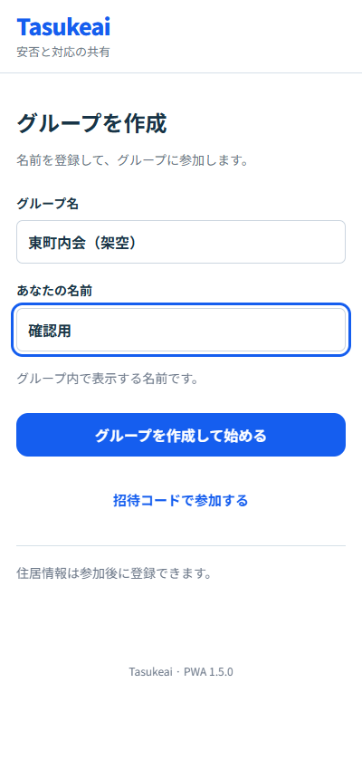
画像内の入力欄やボタンは操作できません。架空データでの検証時の状態を記録しています。
実際のPWAを開く ↗PWA 1.5.2・Android 1.5.17
津波地図を追加。海岸の基準地点3mのみ計算済みで、10m・20m格子の結果を比較できます。
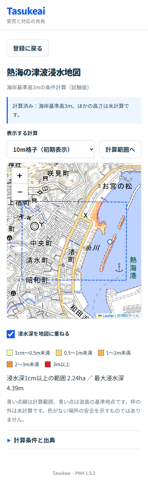
実装版を撮影した画像です。地図の操作は実際のPWAで行えます。初期水位TP0m・押し波10分の条件計算で、実際の津波予測ではありません。枠外・ほかの高さは未計算です。
圏外の画像は、通信中に開いた計算を通信オフで再表示したものです。背景地図は保存状況によって表示できない場合があります。
Android 1.5.17はエミュレーターで確認した実装画面です。実機は未更新で、住民情報を表示していません。
実際のPWAで地図を見る ↗PWA 1.6.0 · 公開実装版
Web 1.6.17の地図／一覧／対応／安否とメニュー配置を反映。地図内に津波高を入力し、2つの計算範囲を照合します。
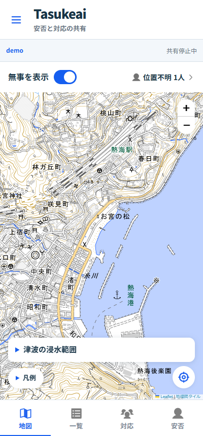
登録情報は架空です。「12.5m」は実際の計算結果で、ほかは操作画面です。入力ごとに計算するため、このPCの12.5m試験では約4分17秒かかりました。実津波の予測ではなく、枠の外にも浸水が続く可能性があります。
左のPWA 1.5.2の3m計算は過去の試験画面です。境界の検証で不採用となった結果のため、現在の判断には使えません。
Android 1.5.18 · 実装版
津波高を地図内で数値入力。広さの異なる2範囲を照合する共通計算をAndroidに同梱しました。
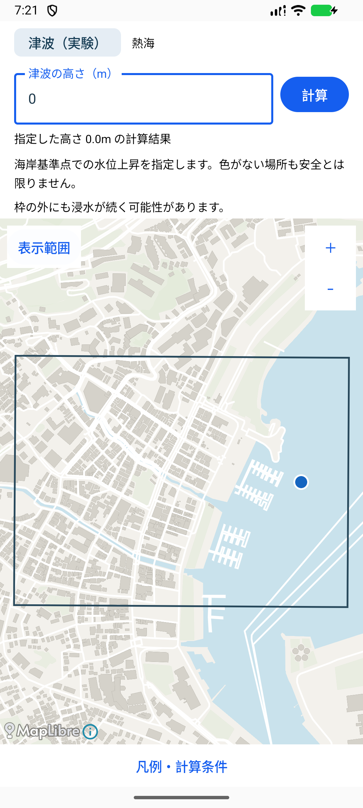
エミュレーターで確認した地図部品の実装画面です。住民情報は使っていません。実機は未更新です。
PWA 1.6.1 · 公開実装版
一覧・対応・安否をWeb 1.6.17の画面に統一。担当開始・対応状況・資材と安否メモを保存できます。
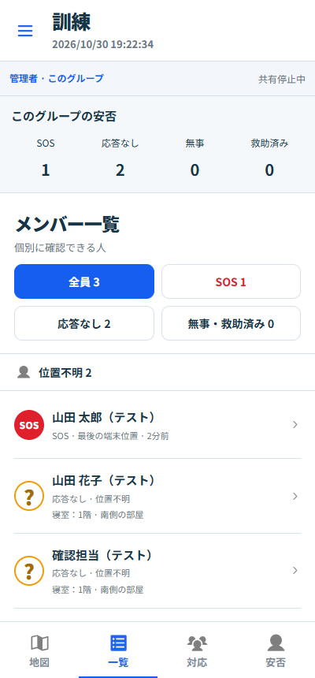
架空の訓練データで、実際に記録の保存・担当の開始・資材の入力を確認した画面です。日本語・英語の切替にも対応しています。画像内のボタンは操作できません。
PWA 1.6.1は公開済みで、公開先でも画面と記録の保存を確認しています。画像は同じ実装を架空の訓練データでローカル撮影したものです。
公開PWA 1.6.1を開く ↗Android 1.5.19 · 実装版の実画面
承認済みの一覧・対応・安否をAndroidへ反映。担当開始・対応状況・必要資材の保存を確認しました。
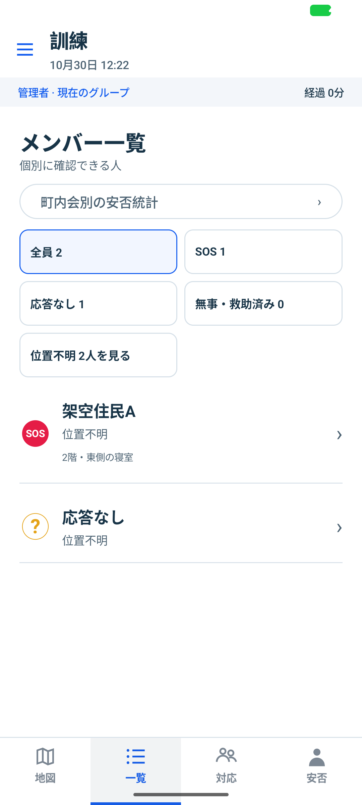
Android 1.5.19（コード32）をエミュレーターで操作し、通報・担当・対応状況・資材の保存を確認した実画面です。人物・グループ・通報は架空で、画像内のボタンは操作できません。
「対応」は英語表示を選んだ画面です。氏名や通報本文など、利用者が入力した文章はそのまま表示しています。「安否」は回答前の入力画面です。
Android 1.5.20 · 実装画面
1.6.17に合わせ、白い下部メニュー・青い選択ボタン・入力欄・文字とアイコンを修正。実機でも共通部品の表示を確認しました。
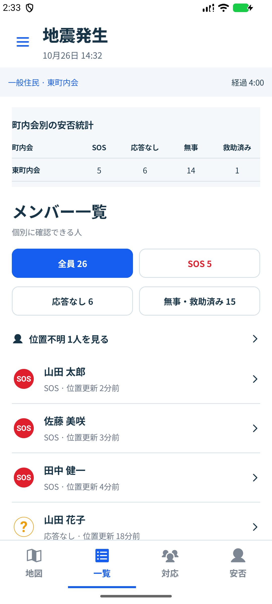
架空データでエミュレーター撮影。実機や接続中のグループの画像は公開していません。画像内は操作できず、下の選択ボタンで画面を比較できます。
Android固有の機能への入口は保持。統計は取得できるグループの範囲だけ表示し、Webの架空の他町内会の数値を製品へ転用していません。
PWA 1.6.2 · 会場参加の実装画面
グループ名とパスワードで参加し、名前→安否→地図へ。会場専用の京都の配置は、実際の住居・GPSと分けて保存します。
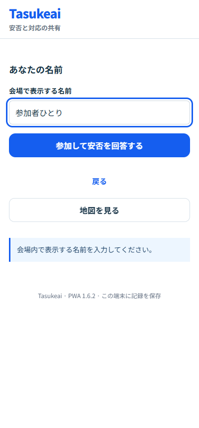
Android 1.5.24 · 会場参加の実装画面
会場名・パスワードから参加し、住居入力なしで安否回答。御所南〜烏丸御池のデモ位置を使い、地図／一覧／対応／安否の配置を維持します。
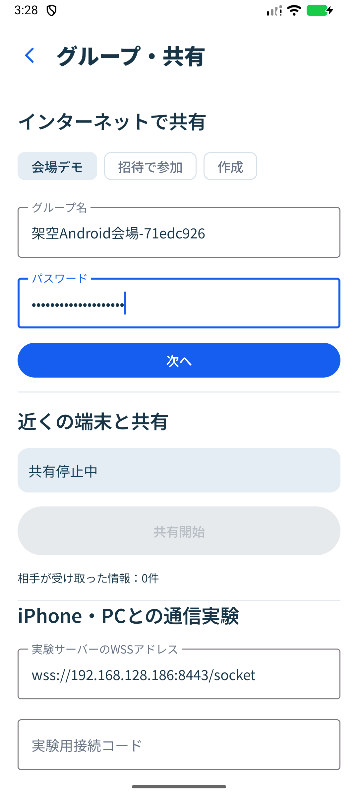
PWA 1.6.3 · UIの仕上げ
読みやすい補助文字、押しやすい地図ボタン、固定した詳細の主要操作。文字拡大・短い画面・キーボード操作に対応。
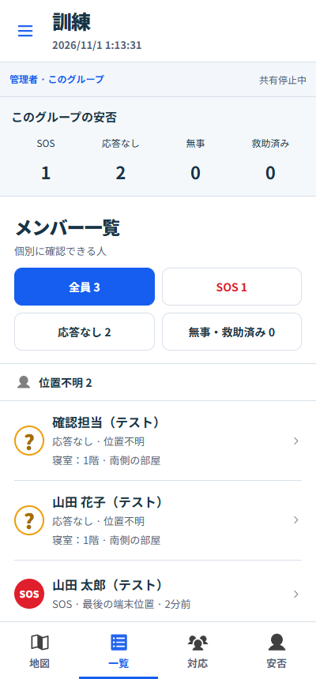
Android 1.5.25 · UIの仕上げ
一覧の統計を読みやすくし、対応詳細の担当・進捗・緊急度を整理。文字拡大と48dpの操作領域を改善。
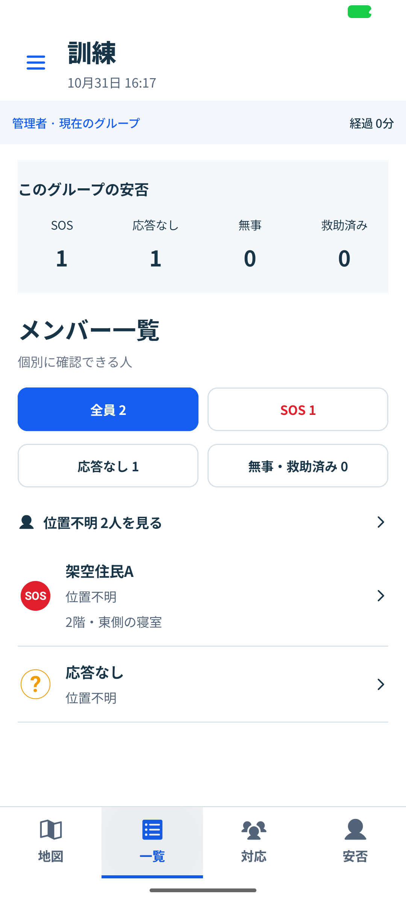
vivo実機 · Android 1.5.25 / 1.5.26
実機で文字・タップ・詳細・凡例・設定を確認。製品と同じ部品を使った非保存の架空データ画面です。
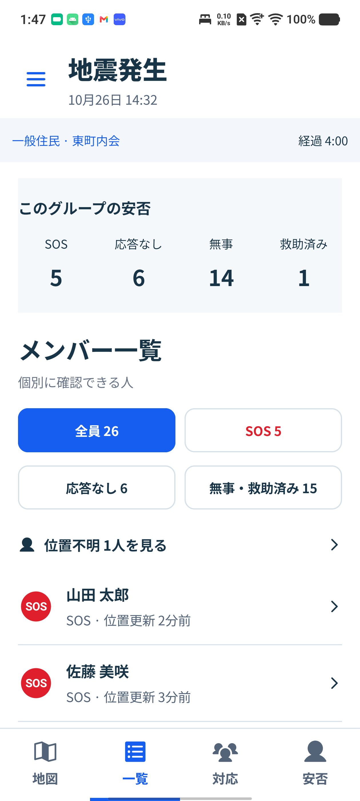
PWA 1.6.5 · 同じ地図で津波を表示
「無事を表示」を小さくし、「津波［数値］m」を横に配置。高さを入力すると同じ地図の浸水エリアを更新します。
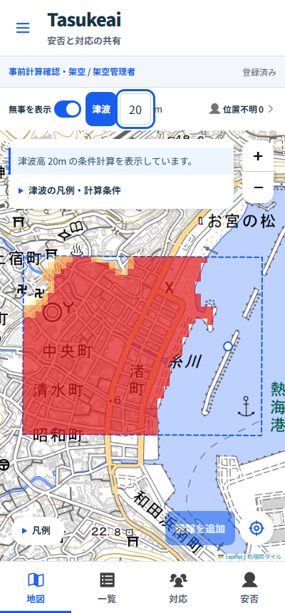
ANDROID 1.5.27 · 同じ地図で津波を表示
「無事を表示」を小さくし、「津波［数値］m」を横に配置。高さを入力すると同じ地図の浸水エリアを更新します。
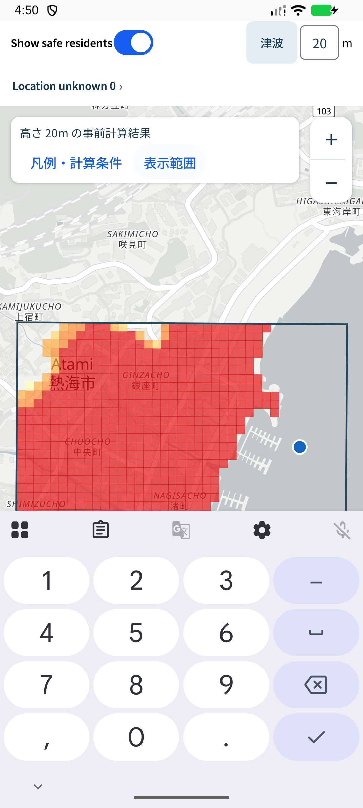